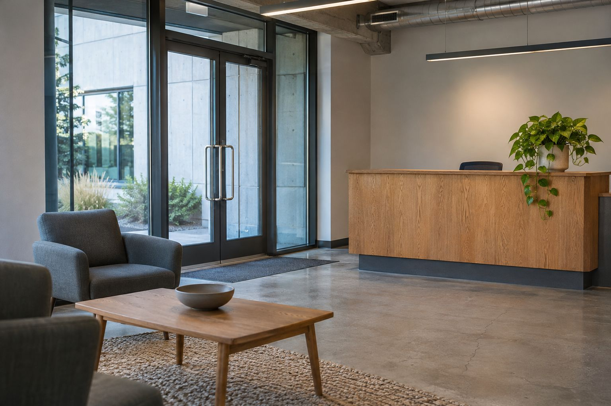

CONTACT & INQUIRY
필요한 감지부터,
함께 정리해 보세요.
실제 상담이 아닌 문의 흐름 체험입니다. 예시 항목을 선택하면 입력 내용을 화면에서만 확인합니다.

START WITH A QUESTION
어떤 환경에서
무엇을 읽고 싶으신가요?
측정 대상과 목적을 정리하면 제품 검토에 필요한 질문이 선명해집니다.
전화 02-000-0000 (가상 번호)
hello@example.com (예시 주소)
폼 내용은 저장·전송되지 않습니다.